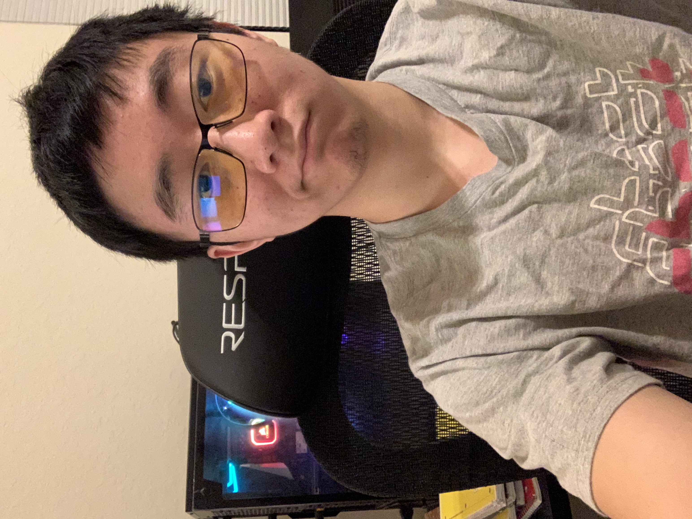

About Me
My name is Nicky Qin, and I am a 19 year old sophomore attending the University of Texas at Austin. My current major is Business Unspecified, but I am hoping to transfer to Computer Science by Fall 2022. I enjoy web design, along with other projects that require me to build things.
(Last Updated: 09/26/21)
Resume

Hobbies
I enjoy activities that challenge me and allow me to see improvement. I have recently picked up Judo and rock climbing, both of which I practice a few times a week. Besides that, I like watching anime and gaming.
Skills & Projects
- HTML
- CSS
- Java Basics
- SQL (DDL, DML)
- Building this website from scratch
- Designing an ERD for a hotel reservation system and creating the data structure in SQL